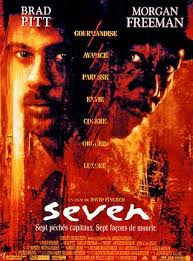

1. Seven
Peu avant sa retraite, l'inspecteur William Somerset, un flic désabusé, est chargé de faire équipe avec un jeune idéaliste, David Mills. Ils enquêtent tout d'abord sur le meurtre d'un homme obèse que son assassin a obligé à manger jusqu'à ce que mort s'ensuive. L'enquête vient à peine de commencer qu'un deuxième crime, tout aussi macabre, est commis, puis un troisième. Petit à petit, les deux policiers font le lien entre tous ces assassinats.
2. The Dark Knight

Batman est plus que jamais déterminé à éradiquer le crime organisé qui sème la terreur en ville. Epaulé par le lieutenant Jim Gordon et par le procureur de Gotham City, Harvey Dent, Batman voit son champ d'action s'élargir. La collaboration des trois hommes s'avère très efficace et ne tarde pas à porter ses fruits jusqu'à ce qu'un criminel redoutable vienne plonger la ville de Gotham City dans le chaos.
3. Baby Driver

Chauffeur pour des braqueurs de banque, Baby a un truc pour être le meilleur dans sa partie : il roule au rythme de sa propre playlist. Lorsqu'il rencontre la fille de ses rêves, Baby cherche à mettre fin à ses activités criminelles pour revenir dans le droit chemin. Il est forcé de travailler pour un grand patron du crime et le braquage tourne mal. Désormais, sa liberté, son avenir avec la fille qu'il aime et sa vie sont en jeu.